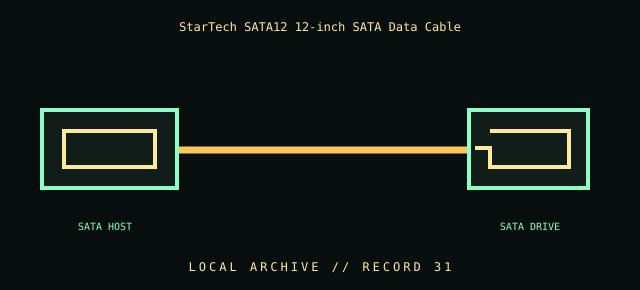

[ INDIVIDUAL COMPONENT // CABLES & ADAPTERS ]
StarTech SATA12 12-inch SATA Data Cable
StarTech.com SATA12 12-inch Serial ATA data cable. This entry identifies the documented model and does not claim that visually similar products share its pinout, protocol, capability, or host compatibility.

COMPATIBILITY WARNING: Verify the exact product model, host/device role, signal protocol, electrical requirements, and manual before connection. Connector fit alone does not prove compatibility.
Specifications
| Catalog subcategory | Data, peripheral, and high-speed cables |
|---|---|
| Catalog identity | StarTech.com SATA12 12-inch Serial ATA data cable |
| Verified protocol / model information | StarTech identifies SATA12 as a 12-inch Serial ATA data cable. This record makes no claim about a particular SATA generation or signaling rate beyond the manufacturer-listed model family. |
| Connector ends | SATA HOST → SATA DRIVE; diagram is schematic, not a pinout map. |
Physical & electrical compatibility
For compatible SATA host and device data connectors only; it is not a SATA power cable. Confirm connector geometry against the cable in hand and leave clearance for its bends; never force a keyed connector against a drive cage or motherboard heatsink. Data generation and link rate are negotiated by host and device.
Archival & handling notes
Record the 12-inch length and connector geometry visible on the actual cable. Avoid sharp bends; inspect latch, keyed L-shape, and conductors before installation.
Record provenance, condition, label photographs, exact full part number/revision, host system, and any test method/result. Preserve packaging and source documents with the cable when available.
Manufacturer & standards references
- StarTech — SATA12 SATA data cableManufacturer identifies its tight-space/12-inch cable design.
- SATA-IO — Serial ATA specificationsPrimary standards organization reference for SATA data interface generations.
Manufacturer documentation applies to the cited model; standards references describe the protocol family. Where product revisions or device support vary, the exact manufacturer manual and host documentation take precedence.